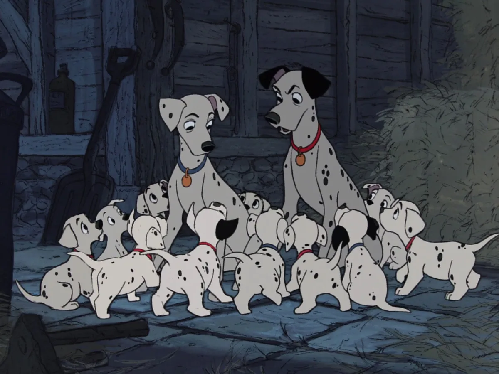
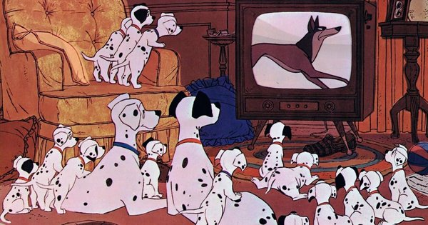
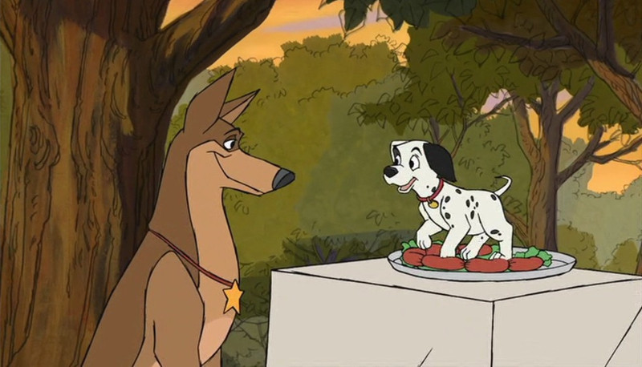
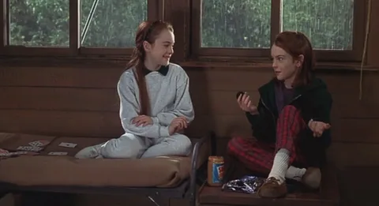
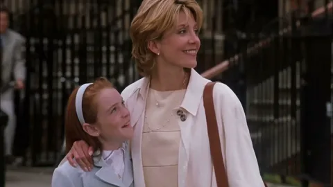
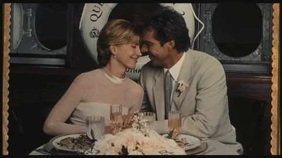
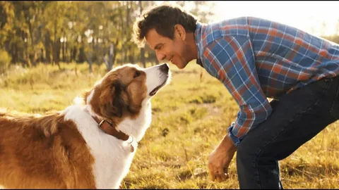
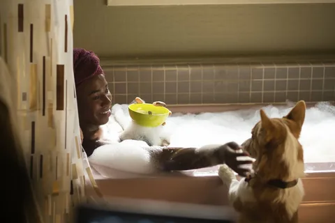
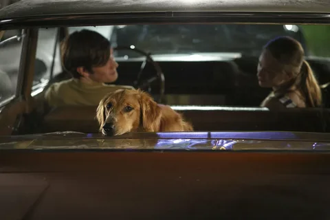

Миллионерша Стервелла Де Виль, чья первая попытка похитить 101 далматинца и пошить из их шкурок роскошную шубу с треском провалилась, готовит новый дьявольский план по захвату славных песиков.
Она потирает руки в ожидании легкого успеха, но на пути негодяйки встают храбрый щенок Патч и его новый друг Громобой - четвероногая звезда экрана! Улицы Лондона никогда еще не видели такой заварушки: двое отважных, смекалистых псов против коварной, мерзкой, но ужасно глупой Де Виль. Бедная Стервелла! Не видать ей пятнистой шубы как своих ушей!
|  |  |  |
| Год | 2003 |
| Страна | США, Япония, Великобритания, Гонконг, Канада |
| Жанр | мультфильм, мюзикл, комедия, приключения, семейный |
| Режиссер | Джим Каммеруд, Брайан Смит |
Юная Холли Паркер живет в солнечной Калифорнии с самым замечательным отцом на свете, а ее ровесница Энни Джеймс - в туманном Лондоне с прекрасной любящей матерью. Первая мечтает о маме, без которой ей очень тяжело, а второй так хочется, чтобы у нее был папа.
Когда девочки случайно встречаются в летнем лагере, им есть, чем поделиться друг с другом. Но помимо общих горестей между Холли и Энни существует еще одно сходство: они... близнецы! Их родители развелись много лет назад, и девочки решают исправить эту трагическую ошибку.
Сестрички начинают действовать: американка возвращается в Лондон, а англичанка в Америку. И ничего не подозревающие родители легко попадают в ловушку...
|  |  |  |
| Год | 1998 |
| Страна | США, Великобритания |
| Жанр | драма, мелодрама, комедия, приключения, семейный |
| Режиссер | Нэнси Майерс |
Собаки бывают разных пород, мастей и размеров. Они - наши самые верные и преданные друзья, а мы учим их хорошим манерам. Собаки всегда думают о нас, правда, иногда и о беконе. Все они каждый день провожают и встречают нас у порога в уверенности, что пока им есть, кого облизывать и любить, в их жизни есть смысл.
|  |  |  |
| Год | 2017 |
| Страна | США, Индия |
| Жанр | фэнтези, драма, комедия, приключения, семейный |
| Режиссер | Лассе Халльстрём |